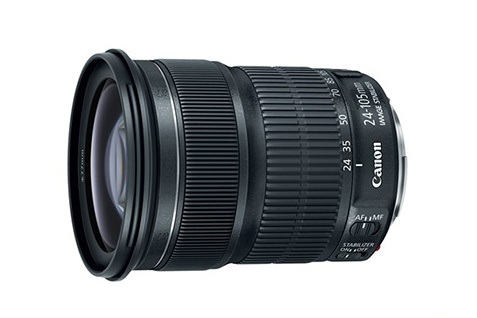

 这是一款性价比很高的标准变焦镜头，焦距覆盖广角到中远摄，可以应对风景以及人像等多种场景的拍摄。在实现了接近L镜头的高画质的同时，还保持了轻量化设计，机身仅约525克。作为对应全画幅的EF镜头，首次采用了STM步进马达（导螺杆型单元）※1不仅在拍摄静止图像时对焦高速精准，在拍摄短片时，若搭配带有短片伺服功能的相机使用，同样可以实现安静平稳的追踪对焦。该镜头内置了2片玻璃模铸非球面镜片以及1片UD镜片，全画幅成像时，显著提升了大家关注的画面周边画质，同时还很好地修正了广角镜头容易出现的歪曲像差以及倍率色像差等问题，即使是画面四周的细节也成像锐利。由7片叶片组成的圆形光圈带来美丽的虚化效果。最近对焦距离约为0.4米，最大放大倍率约为0.3倍（焦距为105mm时），可以尽可能地接近拍摄并拍大被摄体，将其拍摄得很雄伟。配备了IS影像稳定器，可实现最大相当于约4级快门速度※2的手抖动补偿效果，大大拓宽了手持拍摄的领域。不仅可实现夜景或昏暗室内的手持拍摄，还可以灵活运用被摄体抖动，拍摄出有创意的作品。另外，它还可自动识别正常拍摄和追随拍摄，并根据不同的拍摄模式自动调整抖动补偿模式。
※1 由于本镜头采用电子对焦环，安装到相机上时，如未相机电源则无法调焦。
※2 基于CIPA标准
※使用增距延长管 EF25 II时，广角端不可用。
※搭配佳能77MM近摄镜片 500D时，只能在远摄端使用。
| 镜头焦距 | 24-105mm |
|---|---|
| APS-C画幅下的35mm规格换算焦距 *1 | 约38-168mm |
| 镜头结构 | 13组17片 |
| 光圈叶片 | 7片（圆形光圈） |
| 最小光圈 *2 | 22-38 |
| 最近对焦距离 | 约0.4米 |
| 最大放大倍率 *3 | 约0.3倍 |
| 驱动系统 | STM+导螺杆型单元 |
| 最大手抖动补偿效果 | 约4级 (105mm焦距端，根据CIPA标准) |
| 滤镜直径 | 77毫米 |
| 最大直径及长度 | 约Φ83.4×104毫米 |
| 重量 | 约525克 |
光圈值：f/7.1
快门速度：1/25 秒